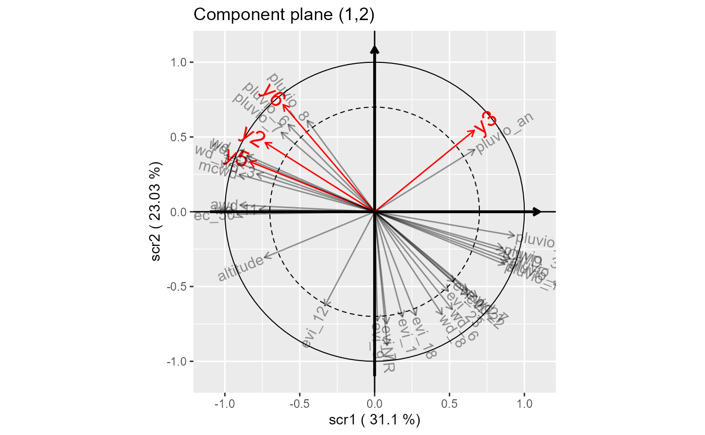

library(SCGLR)
# load sample data
data(dataGen)
k.opt=4
s.opt=0.1
l.opt=10
withRandom.opt=kCompRand(Y=dataGen$Y, family=rep("poisson", ncol(dataGen$Y)),
X=dataGen$X, AX=dataGen$AX,
random=dataGen$random, loffset=log(dataGen$offset), k=k.opt,
init.sigma = rep(1, ncol(dataGen$Y)), init.comp = "pca",
method=SCGLR::methodSR("vpi", l=l.opt, s=s.opt,
maxiter=1000, epsilon=10^-6, bailout=1000))
plot(withRandom.opt, pred=TRUE, plane=c(1,2), title="Component plane (1,2)",
threshold=0.7, covariates.alpha=0.4, predictors.labels.size=6)